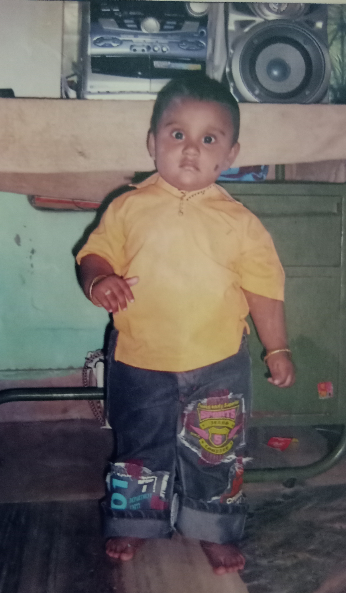
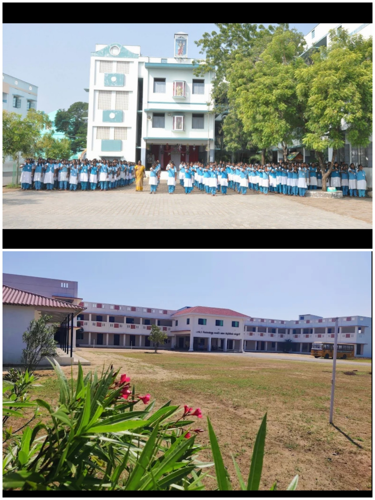
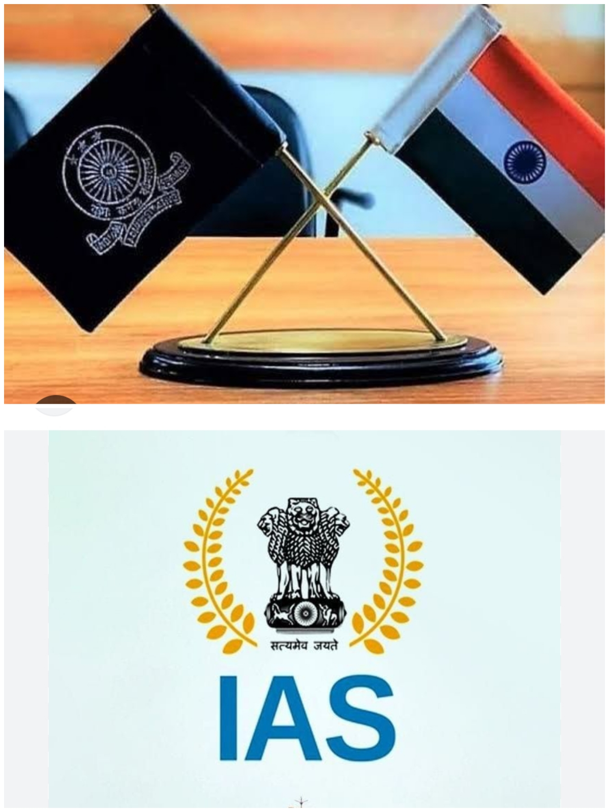

I am Bharakathul Elmiya.I was born on 18th July 2006.I am daughter of Sathik Ali and Rajira Banu. I have one brother .his name is Ussainsha
when I was a child I was very naughty. I did not talk too much to anyone.I playing only with my close friends
I studied pre-kg to 5th standard at the St. Antony's Nursery and Primary school in kariyapattinam.I studied from 6th to 12th standard at St.Theresa's Girls Higher Secondary School in thiruthuraipoondi. I stay at my grandmother's house while studying
I am studying at Dr.Sivakkannu women's arts and science College in Ayakaranpulam.I am currently studying in my 3rd year of BSC computer science
My dream is to become an IAS officer.one day,I can achieve my goal
